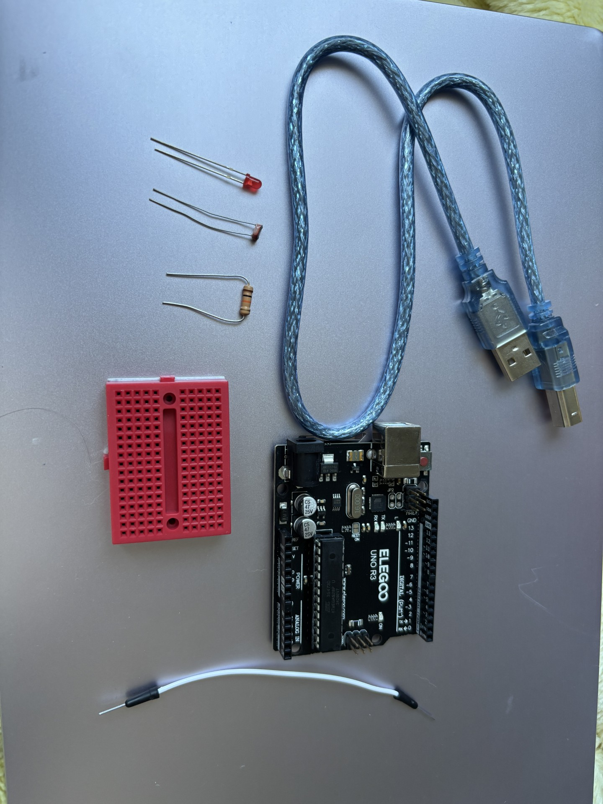

モーター制御を学び、光センサーを活用して 明るくなったときにモーターが動作する ビンタ目覚まし装置を作成することを目的とする。

暗い状態から明るくなったことをセンサーで検知し、 モーターを回転させてアームを動かし、 利用者を起こす仕組みを作成した。
コードや配線は難しかったが、 前回学んだ光センサーの内容を応用しながら モーター制御につなげることができた。 単純な回転だけでなく作品として動作させられた点が面白く、 今後はさらに別のセンサーとも組み合わせて応用してみたい。